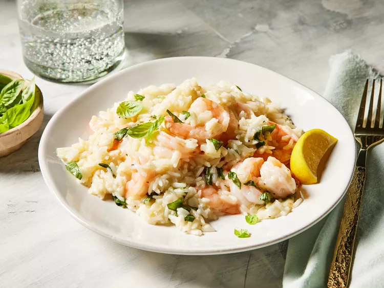

Home
One-Pan Shrimp And Rice

This recipe is a bright meal with lots of acid, fluffy rice, and juicy shrimp—and it only uses one pan.
“This could easily become one of my go-to weeknight dinners to make,” says recipe tester Renu Dhar. “The flavors
are clean and simple.”
Juicy lemony shrimp nestled in fluffy herby and cheesy jasmine rice is a great weeknight dinner option that's
light yet filling—and all cooked in one-pan.
Ingredients
- 5 tablespoons unsalted butter, divided
- 1 yellow onion, finely chopped
- 6 cloves garlic, finely chopped
- 1/4 cup dry white wine
- 2 cups chicken stock
- 2 teaspoons lemon zest
- 1 1/2 teaspoons kosher salt
- 1/4 teaspoon freshly ground black pepper
- 1 1/2 cups uncooked jasmine rice, rinsed
- 1 pound medium peeled, deveined raw shrimp
- 1 tablespoon freshly squeezed lemon juice
- 1/2 cup freshly grated Parmesan cheese
- 2 tablespoons finely chopped fresh basil, plus small leaves for garnish
- lemon wedges for serving
Steps
- Gather all ingredients.
- Melt 1 tablespoon butter in a large nonstick skillet over medium. Add onion, and cook, stirring
occasionally, until soft and translucent, about 3 minutes.
- Stir in chicken stock, lemon zest, salt, and black pepper. Bring to a boil over medium, and stir in rice.
- Remove from heat. Stir in Parmesan cheese and basil. Garnish with lemon wedges and basil leaves.